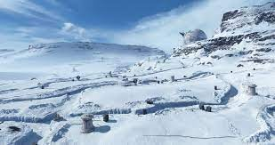
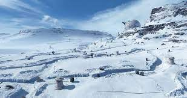

Historia
La Batalla de Yavin fue una victoria temporal para la Rebelión ya que a pesar de tener éxito en la destrucción del arma secreta del Imperio, el ejército imperial contaba con más poder armamentístico y militar para resistir la ofensiva rebelde y en consecuencia lanzaron un devastador contraataque decididos a terminar con la insurgencia de una vez por todas destruyendo sus principales bases y forzando a los rebeldes a ocultarse en los puntos más alejados de la Galaxia. A tres años de la ofensiva imperial, los rebeldes logran encontrar y establecer una nueva base donde puedan estar seguros y poder reorganizar sus tropas, encontrando un escondite seguro en el remoto mundo gélido de Hoth.

 
